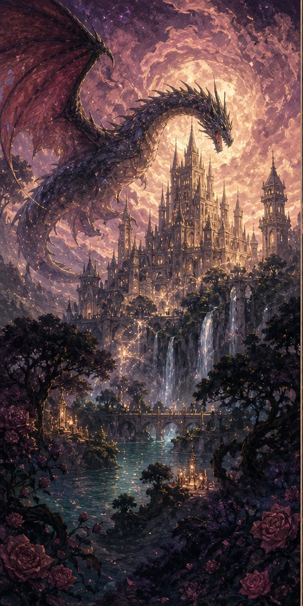
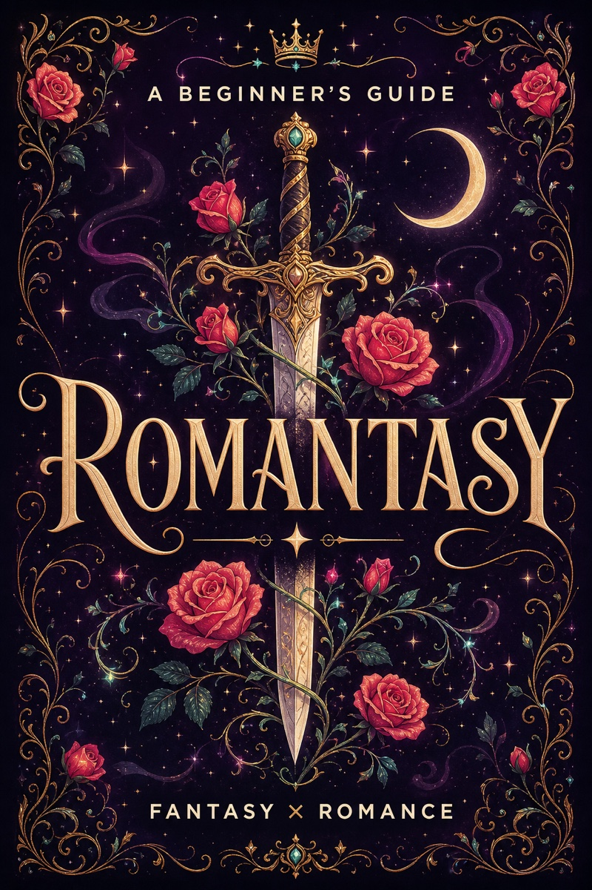
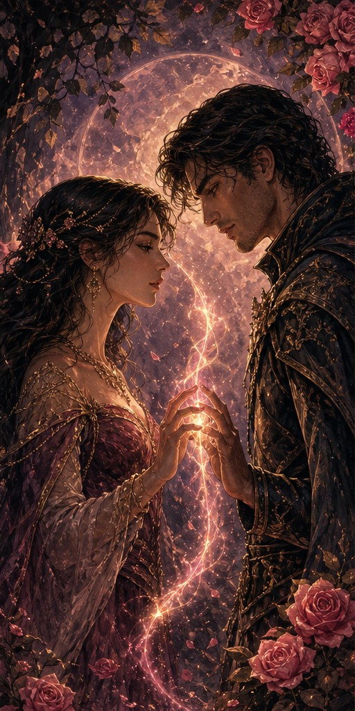
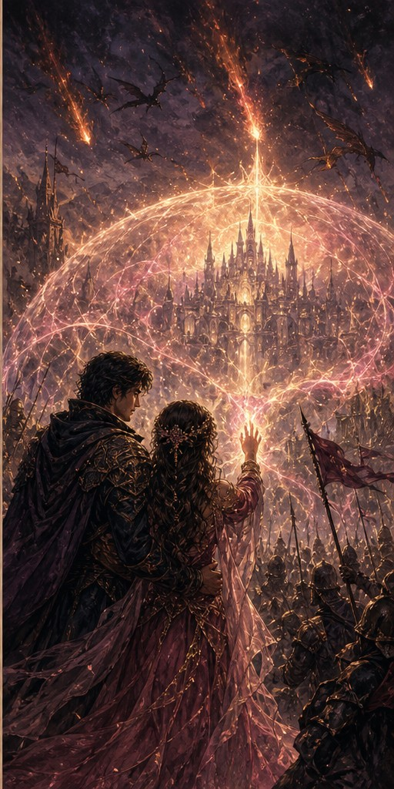

Fantasy
A fantasy world or speculative element
The story needs a speculative foundation—not just a historical-looking backdrop or decorative map.
- Magic and magical schools
- Creatures and immortals
- Kingdoms, quests and conflict
The complete beginner’s guide
Romantasy blends a fantasy world with a love story that matters—and lets each one change the stakes of the other. Start with the basics, or jump straight to a six-question book-matching quiz.

The short answer
Romantasy is fiction that combines fantasy and romance, giving both the magical world and the central love story meaningful influence over the plot.
In other words: the characters may be saving a kingdom, surviving a magical trial, negotiating with fae courts, or learning to ride dragons—but falling in love is not merely background decoration.
The word is a blend of romance and fantasy. It is useful, popular, and slightly chaotic because readers, publishers, booksellers, and authors do not always draw its boundaries in exactly the same place.
That is okay. You do not need to win a genre debate before finding a book you love.
The smutHub definition: Romantasy combines a consequential romance with an essential fantasy setting or conflict. Remove either one and the story meaningfully changes.
01 · The definition
A book becomes romantasy when the speculative world and the central relationship both shape the plot. Remove either one and the story should meaningfully change.

Fantasy
The story needs a speculative foundation—not just a historical-looking backdrop or decorative map.

Romance
The relationship carries real narrative weight and changes what the characters choose, risk or become.

Interaction
The strongest romantasy stories connect the magical conflict and romantic arc instead of running them side by side.
02 · The balance
Some books lead with the quest; others lead with the relationship. Both can be romantasy when fantasy and romance remain essential to the same story.
The magical stakes and relationship arc share the spotlight.
03 · Explore the worlds
These recurring worlds, creatures and magical setups help readers describe what kind of romantasy they want next. Hover for context, or tap a card on mobile.
Beautiful, dangerous immortals turn bargains, etiquette and court politics into romantic stakes.
Book examplesThe Cruel PrinceA Court of Thorns and RosesElite riders, psychic bonds and aerial warfare add enormous stakes to already complicated attraction.
Book examplesFourth WingIron FlameSpells, covens and forbidden power create secrets that can protect—or fracture—a relationship.
Book examplesSerpent & DoveThe Very Secret Society of Irregular WitchesImmortality, hunger and unequal power turn trust into the heart of the romantic conflict.
Book examplesBrideThe Serpent and the Wings of NightSupernatural bonds can promise compatibility, but the best stories still make characters choose each other.
Book examplesA Hunger Like No OtherBrideSuccession, diplomacy and duty force love interests to weigh private desire against public consequence.
Book examplesThe Bridge KingdomPowerlessTraining grounds and deadly classrooms create forced proximity, rivalry and coming-of-power arcs.
Book examplesA Deadly EducationZodiac AcademyRetellings and divine politics remix familiar myths around modern desire, fate and rebellion.
Book examplesNeon GodsThe Song of AchillesA magical contract or curse gives the couple a ticking clock—and usually a reason not to trust each other.
Book examplesOnce Upon a Broken HeartA Deal with the Elf KingTravel, destiny and impossible missions give a relationship time to grow under pressure.
Book examplesThrone of GlassFrom Blood and AshFound family, gentle magic and community-building make room for romance without world-ending danger.
Book examplesLegends & LattesHalf a SoulHover or focus for details · swipe on mobile · use arrows to explore
04 · Relationship dynamics
Based on the current smutHub catalogue, these are the relationship and story dynamics readers encounter most often.
The love interests begin as antagonists or rivals and gradually turn that animosity into desire.
Attraction develops over a long stretch of the story, with emotional or physical resolution deliberately delayed.
A relationship is made dangerous or unacceptable by law, duty, rival kingdoms, species or magic.
Characters form deep family-like bonds outside of blood—chosen, fought for and protected.
Circumstance requires characters who would otherwise stay apart to travel, train, hide or live together.
Two characters are magically, spiritually or cosmically destined to be together—often with consequences for resisting.
A character conceals their name, status, species, powers or true allegiance from someone important.
A character is marked by prophecy, magic or fate for an important—and usually dangerous—role.
A character gives up safety, power, freedom or something precious to protect the person or world they love.
Three characters are caught in a romantic conflict where competing relationships cannot all continue unchanged.
05 · Beginner picker
I came to romantasy knowing almost none of this. Building smutHub began as a way to understand the books my wife loved and find better ways to share that world with her. Start with the experience that already sounds good to you—not whichever book happens to be most popular.
01 / 0606 · Before you begin
Romantasy is a broad shelf, not one formula. Open each card for the quick version of what the genre is—and what it is not.
07 · Quick answers
Quick answers about meaning, spice, endings, age categories, and where romantasy overlaps with neighbouring genres.
Romantasy blends the words romance and fantasy. It generally describes stories where fantasy elements and a significant romantic relationship both shape the plot.
No. Romantasy describes the combination of romance and fantasy—not the amount of sexual content. It can range from kisses and closed-door intimacy to frequent explicit scenes.
The terms frequently overlap. Some readers use fantasy romance for romance-forward stories and romantic fantasy for fantasy-forward stories, with romantasy as the broader umbrella. Usage is not universal.
Books marketed firmly as genre romance usually promise an emotionally satisfying romantic outcome. Fantasy-forward, dark, or unfinished romantasy series can be less predictable, so check the book and series description when the ending matters to you.
No. Smut refers to explicit sexual content. Romantasy refers to the combination of fantasy and romance. A book may be both, either one, or neither.
It can be either. Age category, character ages, themes, language, and sexual explicitness vary by title. Do not use the romantasy label alone to determine suitability.
Paranormal romance often places supernatural characters in a version of the real world. Romantasy may use an entirely invented world or a larger fantasy conflict. The categories overlap, especially with vampires, shifters, witches, and hidden magical societies.
Ask whether the main story would still work mostly the same way if the relationship disappeared. If it would, the book may be fantasy with a romance subplot. If removing the relationship breaks motivations, alliances, or the resolution, it is more likely romantasy.
Romantasy is for readers who want emotional intensity and imaginative escape in the same book—whether that means yearning in a magical court, romance during a dangerous quest, cozy witchy charm, or dragons with excellent chemistry.
Most people say “roh-MAN-tuh-see,” blending romance and fantasy into one word.